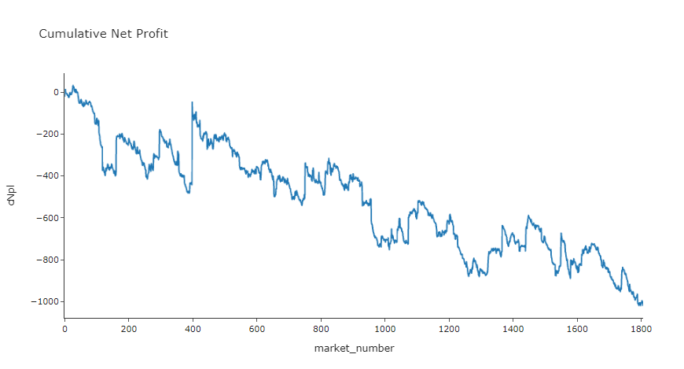

Backtesting wagering models with Betfair JSON stream data
Workshop
This tutorial was written by Tom Bishop and was originally published on Github. It is shared here with his permission.
This tutorial follows on logically from the JSON to CSV tutorial we shared previously. If you're still new to working with the JSON data sets we suggest you take a look at that tutorial before diving into this one.
As always please reach out with feedback, suggestions or queries, or feel free to submit a pull request if you catch some bugs or have other improvements!
Cheat sheet
-
If you're looking for the complete code head to the bottom of the page or download the script from Github.
-
To run the code, save it to your machine, open a command prompt, or a terminal in your text editor of choice (we're using VS code), make sure you've navigated in the terminal to the folder you've saved the script in and then type
py main.py(or whatever you've called your script file if not main) then hit enter. To stop the code running use Ctrl C. -
Make sure you amend your data path to point to your data file. We'll be taking in an input of a historical tar file downloaded from the Betfair historic data site. We're using a PRO version, though the code should work on ADVANCED too. This approach won't work with the BASIC data tier.
-
We're using the
betfairlightweightpackage to do the heavy lifting -
We've also posted the completed code logic on the
betfair-downunderGithub repo. -
You can watch our workshop working through this tutorial on YouTube.
Set up
I'm going to be using a jupyter notebook for this investigation which is a special type of data analysis output that is used to combine code, outputs and explanatory text in a readable single document. It's mostly closely associated with python data analysis code which is the language I'll be using here also. The entire body of python code used will be repeated at the bottom of the article where you can copy it and repurpose it for yourself.
If you're not familiar with python, don't worry neither am I really! I'm inexperienced with python so if you have experience with some other programming language you should be able to follow along with the logic here too. If you don't have experience using another programming language this all might appear intimidating but it's heavy on the explanatory text so you should get something out of it.
We need a few non standard python libraries so make sure to install betfairlightweight and plotly before you get started with something like pip install betfairlightweight & pip install plotly. We'll load all our libraries and do some setup here.
import pandas as pd
import numpy as np
import requests
from datetime import date, timedelta
import os
import re
import tarfile
import zipfile
import bz2
import glob
import logging
from unittest.mock import patch
from typing import List, Set, Dict, Tuple, Optional
from itertools import zip_longest
import plotly.express as px
import betfairlightweight
from betfairlightweight import StreamListener
from betfairlightweight.resources.bettingresources import (
PriceSize,
MarketBook
)
%config IPCompleter.greedy=True
Context
Backtesting is the life-blood of most successful wagering systems. In short it attempts to answer a single question for you:
𝜏 : How much money will I win or lose if I started using this system to place bets with real money?
Without a rigorous and quantitative backtesting approach it's really quite hard to estimate the answer to this question $ \tau $ that will be even reliably on the right side of zero.
You could live test your system with real bets at small stakes, however, this isn't the panacea it seems. It will take time (more than you think) for your results to converge to their long term expectation. How long? Answering this question will require some expertise with probability and statistics you might not have. Even more than that though is that depending on where you're betting your results at small stakes could be very different than at larger stakes. You might not be able get a good answer to $ \tau $ until betting at full stakes at which point finding the answer might coincide with blowing up your gambling bankroll.
Backtesting is also very hard. To perfectly backtest your own predicted probability on a historical race or sporting match you need to produce 2 things:
(1) What would my predicted chance have been exactly for this selection in this market on this day in the past?
(2) What would have I decided to bet at what odds (exactly) and for how much stake (exactly) based on this prediction?
The devil in the detail of backtesting tends to be in those exactlys.
The aim of the backtesting game is answering (2) as accurately as possible because it tells you exactly how much you would have made over your backtesting period, from there you can confidently project that rate of profitability forward.
It's easy to make mistakes and small errors in the quantitative reasoning can lead you to extremely misguided projections downstream.
Question (1) won't be in the scope of this notebook but it's equally (and probably more) important that (2) but it is the key challenge of all predictive modelling exercises so there's plenty of discussion about it elsewhere.
Backtesting on Betfair
Answering question (2) for betting on the Betfair Exchange is difficult. The Exchange is a dynamic system that changes from one micro second to the next.
What number should you use for odds? How much could you assume to get down at those odds?
The conventional and easiest approach is to backtest at the BSP. The BSP is simple because it's a single number (to use for both back and lay bets) and is a taken price (there's no uncertainty about getting matched). Depending on the liquidity of the market a reasonably sized stake might also not move the BSP very much. For some markets you may be able to safely assume you could be $10s of dollars at the BSP without moving it an inch. However, that's definitely not true of all BSP markets and you need to be generally aware that your Betfair orders in the future will change the state of the exchange, and large bets will move the BSP in an unfavourable direction.
Aside from uncertainty around the liquidity and resilience of the BSP, many many markets don't have a BSP. So what do we do then?
Typically what a lot of people (who have a relationship with Betfair Australia) do at this point is request a data dump. They might request an odds file for all Australian harness race win markets since June 2018 with results and 4 different price points: the BSP, the last traded price, the weighted average price (WAP) traded in 3 minutes before the race starts, and the WAP for all bets matched prior to 3 mins before the race.
However, you will likely need to be an existing VIP customer to get this file and it's not a perfect solution: it might take 2 weeks to get, you can't refresh it, you can't test more hypothetical price points after your initial analysis amongst many other problems.
What if you could produce this valuable data file yourself?
Betfair Stream Data
Betfair's historical stream data is an extremely rich source of data. However, in it's raw form it's difficult to handle for the uninitiated. It also might not be immediately obvious how many different things this dataset could be used for without seeing some examples. These guides will hopefully demystify how to turn this raw data into a familiar and usable format whilst also hopefully providing some inspiration for the kinds of value that can be excavated from it.
This example: backtesting Betfair Hub thoroughbred model
To illustrate how you can use the stream files to backtest the outputs of a rating system we'll use the Australian Thoroughbred Rating model available on the Betfair Hub. The most recent model iteration only goes back till Feb 28th 2021 however as an illustrative example this is fine. We'd normally want to backtest with a lot more historical data than this, which just means in this case our estimation of future performance will be unreliable.
I'm interested to see how we would have fared betting all selections rated by this model according to a few different staking schemes and also at a few different times / price points.
Old ratings
If you want to pull in ratings from before Feb 2021 to add to your database for more complete backtesting these are available in a data dump here.
Scrape The Model Ratings
If you travel to the Betfair hub ratings page you'll find that URL links behind the ratings download buttons have a consistent URL pattern that looks very scrape friendly.

We can take advantage of this consistency and use some simple python code to scrape all the ratings into a pandas dataframe.
# Function to return Pandas DF of hub ratings for a particular date
def getHubRatings(dte):
# Substitute the date into the URL
url = 'https://betfair-data-supplier-prod.herokuapp.com/api/widgets/kash-ratings-model/datasets?date={}presenter=RatingsPresenter&json=true'.format(dte)
# Convert the response into JSON
responseJson = requests.get(url).json()
hubList = []
if not responseJson:
return(None)
# Want an normalised table (1 row per selection)
# Brute force / simple approach is to loop through meetings / races / runners and pull out the key fields
for meeting in responseJson['meetings']:
for race in meeting['races']:
for runner in race['runners']:
hubList.append(
{
'date': dte,
'track': meeting['name'],
'race_number': race['number'],
'race_name': race['name'],
'market_id': race['bfExchangeMarketId'],
'selection_id': str(runner['bfExchangeSelectionId']),
'selection_name': runner['name'],
'model_odds': runner['ratedPrice']
}
)
out = pd.DataFrame(hubList)
return(out)
| date | track | race_number | race_name | market_id | selection_id | selection_name | model_odds |
|---|---|---|---|---|---|---|---|
| 2021-03-01 | COWRA | 1 | R1 1375m Mdn | 1.179845154 | 38620052 | 1. Military Affair | 6.44 |
| 2021-03-01 | COWRA | 1 | R1 1375m Mdn | 1.179845154 | 5889703 | 3. Proverbial | 21.11 |
| 2021-03-01 | COWRA | 1 | R1 1375m Mdn | 1.179845154 | 38177688 | 4. A Real Wag | 9.97 |
| 2021-03-01 | COWRA | 1 | R1 1375m Mdn | 1.179845154 | 38620053 | 5. El Jay | 44.12 |
| 2021-03-01 | COWRA | 1 | R1 1375m Mdn | 1.179845154 | 37263264 | 6. Flying Honour | 3.39 |
dateDFList = []
dateList = pd.date_range(date(2021,2,18),date.today()-timedelta(days=1),freq='d')
for dte in dateList:
dateDFList.append(getHubRatings(dte))
# Concatenate (add rows to rows) all the dataframes within the list
hubRatings = pd.concat(dateDFList)
Assembling the odds file
So part 1 was very painless. This is how we like data: served by some API or available in a nice tabular format on a webpage ready to be scraped with standard tools available in popular languages.
Unfortunately, it won't be so painless to assemble our odds file. We'll find out why it's tricky as we go.
The Data
The data we'll be using is the historical Exchange data available from this website. The data available through this service is called streaming JSON data. There are a few options available relating to granularity (how many time points per second the data updates at) but we'll be using the most granular "PRO" set which has updates every 50 milliseconds.
Essentially what the data allows us to do is, for a particular market, recreate the exact state of the Betfair Exchange at say: 150 milliseconds before the market closed. When people say the state of the Exchange they mean two things a) what are all the current open orders on all the selections b) what are the current traded volumes on each selection at each price point. We obviously don't have access to any information about which accounts are putting up which prices and other things Betfair has themselves. We're essentially getting a snapshot of everything you can see through the website by clicking on each selection manually and looking at the graphs, tables and ladders.
However, with just these 2 sets of information we can build a rich view of the dynamics of exchange and also build out all of the summary metrics (WAP etc) we might have previously needed Betfair to help with.
For our purposes 50 milli-second intervaled data is huge overkill. But you could imagine needing this kind of granularity for other kinds of wagering systems - eg a high frequency trading algorithm of some sort that needs to make many decisions and actions every second.
Let's take a look at what the stream data looks like for a single market:

So it looks pretty intractable. For this particular market there's 14,384 lines of data where each line consists of a single JSON packet of data. If you're not a data engineer (neither am I) your head might explode thinking about how you could read this into your computer and transform it into something usable.
The data looks like this because it is saved from a special Betfair API called the Stream API which which is used by high end Betfair API users and which delivers fast speeds other performance improvements over the normal "polling" API.
Now what's good about that, for the purposes of our exercise, is that the very nice python package betfairlightweight has the functionality built to not only parse the Stream API when connected live but also these historical saved versions of the stream data. Without it we'd be very far away from the finish line, with betfairlightweight we're pretty close.
Unpacking / flattening the data
Because these files are so large and unprocessed this process won't look the same as your normal data ETL in python: where you can read a raw data file (csv, JSON, text etc.) into memory and use python functions to transform into usable format.
I personally had no idea how to use python and betfairlightweight to parse these data until I saw Betfair's very instructive overview which you should read for a more detailed look at some of the below code.
By my count there were 4 key conceptual components that I had to get my head around to understand and be able to re-purpose that code. So if you're like me (a bit confused by some of the steps in that piece) this explanation might help.
I'll assume you don't do any decompression and keep the monthly PRO files as the .tar archives as they are.
Conceptually the process looks something like this:
- Load the "archives" into a "generator"
- Scan across the generator (market_ids) and the market states within those markets to extract useful objects
- Process those useful objects to pull out some metadata + useful summary numbers derived from the available orders and traded volumes snapshot data
- Write this useful summarised data to a file that can be read and understood with normal data analysis workflows First we'll run a bunch of setup code setting up my libraries and creating some utility functions that will be used throughout the main parsing component. It'll also point to the two stream files I'll be parsing for this exercise.
# create trading instance (don't need username/password)
trading = betfairlightweight.APIClient("username", "password")
# create listener
listener = StreamListener(max_latency=None)
### Utility Functions
# rounding to 2 decimal places or returning '' if blank
def as_str(v) -> str:
return '%.2f' % v if type(v) is float else v if type(v) is str else ''
# splitting race name and returning the parts
def split_anz_horse_market_name(market_name: str) -> (str, str, str):
# return race no, length, race type
# input sample: R6 1400m Grp1
parts = market_name.split(' ')
race_no = parts[0] # return example R6
race_len = parts[1] # return example 1400m
race_type = parts[2].lower() # return example grp1, trot, pace
return (race_no, race_len, race_type)
# creating a flag that is True when markets are australian thoroughbreds
def filter_market(market: MarketBook) -> bool:
d = market.market_definition
return (d.country_code == 'AU'
and d.market_type == 'WIN'
and (c := split_anz_horse_market_name(d.name)[2]) != 'trot' and c != 'pace')
1: .tar load
- This function I stole from Betfair's instructional article
- The stream files are downloaded as .tar archive files which are a special kind of file that we'll need to unpack
- Instead of loading each file into memory this function returns a "generator" which is a special python object that is to be iterated over
- This basically means it contains the instructions to unpack and scan over files on the fly
- This function also contains the logic to deal with if these files are zip archives or you've manually unpacked the archive and have the .bz2 zipped files
# loading from tar and extracting files
def load_markets(file_paths):
for file_path in file_paths:
print(file_path)
if os.path.isdir(file_path):
for path in glob.iglob(file_path + '**/**/*.bz2', recursive=True):
f = bz2.BZ2File(path, 'rb')
yield f
f.close()
elif os.path.isfile(file_path):
ext = os.path.splitext(file_path)[1]
# iterate through a tar archive
if ext == '.tar':
with tarfile.TarFile(file_path) as archive:
for file in archive:
yield bz2.open(archive.extractfile(file))
# or a zip archive
elif ext == '.zip':
with zipfile.ZipFile(file_path) as archive:
for file in archive.namelist():
yield bz2.open(archive.open(file))
return None
2: Scan across market states and extract useful objects
- So this function will take a special "stream" object which we'll create with
betfairlightweight - The function takes a stream object input and returns 4 instances of the market state
- The market state 3 mins before the scheduled off
- The market state immediately before it goes inplay
- The market state immediately before it closes for settlement
- The final market state with outcomes
- It basically just loops over all the market states and has a few checks to determine if it should save the current market state as key variables and then returns those
# Extract Components From Generated Stream
def extract_components_from_stream(s):
with patch("builtins.open", lambda f, _: f):
# Will return 3 market books t-3mins marketbook, the last preplay marketbook and the final market book
evaluate_market = None
prev_market = None
postplay_market = None
preplay_market = None
t3m_market = None
gen = stream.get_generator()
for market_books in gen():
for market_book in market_books:
# If markets don't meet filter return None's
if evaluate_market is None and ((evaluate_market := filter_market(market_book)) == False):
return (None, None, None, None)
# final market view before market goes in play
if prev_market is not None and prev_market.inplay != market_book.inplay:
preplay_market = market_book
# final market view before market goes is closed for settlement
if prev_market is not None and prev_market.status == "OPEN" and market_book.status != prev_market.status:
postplay_market = market_book
# Calculate Seconds Till Scheduled Market Start Time
seconds_to_start = (market_book.market_definition.market_time - market_book.publish_time).total_seconds()
# Market at 3 mins before scheduled off
if t3m_market is None and seconds_to_start < 3*60:
t3m_market = market_book
# update reference to previous market
prev_market = market_book
# If market didn't go inplay
if postplay_market is not None and preplay_market is None:
preplay_market = postplay_market
return (t3m_market, preplay_market, postplay_market, prev_market) # Final market is last prev_market
3 & 4: Summarise those useful objects and write to .csv
- This next chunk contains a wrapper function that will do all the execution
- It will open a csv output file
- Use the load_markets utility to iterate over the .tar files
- Use
betfairlightweightto instantiate the special stream object - Pass that stream object to the extract_components_from_stream which will scan across the market states and pull out 4 key market books
- Convert those marketbooks into simple summary numbers or dictionaries that will be written to the output .csv file
def run_stream_parsing():
# Run Pipeline
with open("outputs/tho-odds.csv", "w+") as output:
# Write Column Headers To File
output.write("market_id,event_date,country,track,market_name,selection_id,selection_name,result,bsp,ltp,matched_volume,atb_ladder_3m,atl_ladder_3m\n")
for file_obj in load_markets(data_path):
# Instantiate a "stream" object
stream = trading.streaming.create_historical_generator_stream(
file_path=file_obj,
listener=listener,
)
# Extract key components according to the custom function above (outputs 4 objects)
(t3m_market, preplay_market, postplay_market, final_market) = extract_components_from_stream(stream)
# If no price data for market don't write to file
if postplay_market is None:
continue;
# Runner metadata and key fields available from final market book
runner_data = [
{
'selection_id': r.selection_id,
'selection_name': next((rd.name for rd in final_market.market_definition.runners if rd.selection_id == r.selection_id), None),
'selection_status': r.status,
'sp': r.sp.actual_sp
}
for r in final_market.runners
]
# Last Traded Price
# _____________________
# From the last marketbook before inplay or close
ltp = [runner.last_price_traded for runner in preplay_market.runners]
# Total Matched Volume
# _____________________
# Calculates the traded volume across all traded price points for each selection
def ladder_traded_volume(ladder):
return(sum([rung.size for rung in ladder]))
selection_traded_volume = [ ladder_traded_volume(runner.ex.traded_volume) for runner in postplay_market.runners ]
# Top 3 Ladder
# ______________________
# Extracts the top 3 price / stakes in available orders on both back and lay sides. Returns python dictionaries
def top_3_ladder(availableLadder):
out = {}
price = []
volume = []
if len(availableLadder) == 0:
return(out)
else:
for rung in availableLadder[0:3]:
price.append(rung.price)
volume.append(rung.size)
out["price"] = price
out["volume"] = volume
return(out)
# Sometimes t-3 mins market book is empty
try:
atb_ladder_3m = [ top_3_ladder(runner.ex.available_to_back) for runner in t3m_market.runners]
atl_ladder_3m = [ top_3_ladder(runner.ex.available_to_lay) for runner in t3m_market.runners]
except:
atb_ladder_3m = {}
atl_ladder_3m = {}
# Writing To CSV
# ______________________
for (runnerMeta, ltp, selection_traded_volume, atb_ladder_3m, atl_ladder_3m) in zip(runner_data, ltp, selection_traded_volume, atb_ladder_3m, atl_ladder_3m):
if runnerMeta['selection_status'] != 'REMOVED':
output.write(
"{},{},{},{},{},{},{},{},{},{},{},{},{} \n".format(
str(final_market.market_id),
final_market.market_definition.market_time,
final_market.market_definition.country_code,
final_market.market_definition.venue,
final_market.market_definition.name,
runnerMeta['selection_id'],
runnerMeta['selection_name'],
runnerMeta['selection_status'],
runnerMeta['sp'],
ltp,
selection_traded_volume,
'"' + str(atb_ladder_3m) + '"', # Forcing the dictionaries to strings so we don't run into issues loading the csvs with the dictionary commas
'"' + str(atl_ladder_3m) + '"'
)
)
Extending this code
- Because this process is very slow you might want to save much more information than you think you need
- For example I currently think I only want the best back and lay prices at t-3 mins before the off but I've saved the top 3 boxes in the available to back and lay ladders as dictionary strings
- From these ladders I can retroactively calculate not only just the best back and lay prices but also WAP prices and also sizes at those boxes which I could use for much more accurate backtesting if I wanted to later without having to scan across the entire stream files again
- I could easily save the entire open and traded orders ladders in the same way amongst many other ways of retaining more of the data for post-processing analysis

Backtesting Analysis
Let's take stock of where we are. We currently have model ratings (about 1.5 months worth) and Betfair Odds (2 months worth).
Circling back to the original backtesting context we needed to solve for 2 key questions:
- What would my predicted chance have been exactly for this selection in this market on this day in the past?
- What would have I decided to bet at what odds (exactly) and for how much stake (exactly) based on this prediction?
Backtesting with someone else's publicly available and historically logged ratings solves question 1. With these particular ratings we're fine but generally we should just be aware there are some sketchy services that might make retroactive adjustments to historical ratings to juice their performance which obviously violates 1.
For the second part we now have several real Betfair odds values to combine with the ratings and some chosen staking formula to simulate actual bets. I won't dwell too much on the stake size component but it's important.
Similarly we aren't out of the woods with the "what odds exactly" question either. I'll show performance of backtesting at the "Last Traded Price" however, there's literally no way of actually being the last bet matched order on every exchange market so there's some uncertainty in a few of these prices.
Further, and from experience, if you placing bets at the BSP and you're using some form of proportional staking (like Kelly) then you're calculated stake size will need to include a quantity (the BSP) which you will literally never be 100% sure of. You'll need to estimate the BSP as close to market suspension as you can and place your BSP bets with a stake sized derived from that estimation. This imprecision in stake calculation WILL cost you some profit relative to your backtested expectation.
These might seem like minor considerations but you should be aware of some of the gory details of the many ways becoming successful on Betfair is really difficult. To be reliably profitable on Betfair you don't just need a good model, you'll likely need to spend hours and hours thinking about these things: testing things, ironing out all these little kinks and trying to account for all your uncertainties. I'll just be running over the skeleton of what you should do.
Setting up your master data
# First we'll load and tidy our odds data
# Load in odds file we created above
bfOdds = pd.read_csv("outputs/tho-odds.csv", dtype={'market_id': object, 'selection_id': object, 'atb_ladder_3m': object, 'atl_ladder_3m': object})
# Convert dictionary columns
import ast
bfOdds['atb_ladder_3m'] = [ast.literal_eval(x) for x in bfOdds['atb_ladder_3m']]
bfOdds['atl_ladder_3m'] = [ast.literal_eval(x) for x in bfOdds['atl_ladder_3m']]
# Convert LTP to Numeric
bfOdds['ltp'] = pd.to_numeric(bfOdds['ltp'], errors='coerce')
# Filter after 18th Feb
bfOdds = bfOdds.query('event_date >= "2021-02-18"')
bfOdds.head(5)
| market_id | event_date | country | track | market_name | selection_id | selection_name | result | bsp | ltp | matched_volume | atb_ladder_3m | atl_ladder_3m |
|---|---|---|---|---|---|---|---|---|---|---|---|---|
| 1.179776179 | 2021-02-27 10:48:00 | AU | Toowoomba | R7 1000m Mdn | 31552374 | 2. Chubascos | LOSER | 5.84 | 5.9 | 7390.59 | {'price': [6, 5.9, 5.8], 'volume': [30.99, 82.... | {'price': [6.2, 6.4, 6.6], 'volume': [4.99, 22... |
| 1.179776179 | 2021-02-27 10:48:00 | AU | Toowoomba | R7 1000m Mdn | 38620171 | 3. Love You More | LOSER | 65.00 | 70.0 | 1297.27 | {'price': [65, 60, 55], 'volume': [2, 2.9, 15.... | {'price': [75, 80, 85], 'volume': [0.66, 3.24,... |
| 1.179776179 | 2021-02-27 10:48:00 | AU | Toowoomba | R7 1000m Mdn | 38620172 | 4. Splashing Rossa | LOSER | 10.98 | 10.5 | 2665.94 | {'price': [9, 8.8, 8.6], 'volume': [21.92, 10.... | {'price': [9.6, 9.8, 10], 'volume': [13.43, 7.... |
| 1.179776179 | 2021-02-27 10:48:00 | AU | Toowoomba | R7 1000m Mdn | 38620173 | 5. The Fairytale | LOSER | 54.56 | 50.0 | 221.13 | {'price': [55, 50, 48], 'volume': [4.85, 2.85,... | {'price': [65, 70, 75], 'volume': [2.1, 7.18, ... |
| 1.179776179 | 2021-02-27 10:48:00 | AU | Toowoomba | R7 1000m Mdn | 38620174 | 6. My Boy Dragon | LOSER | 166.90 | 160.0 | 199.00 | {'price': [140, 120, 110], 'volume': [0.36, 1.... | {'price': [260, 270, 340], 'volume': [1.29, 2.... |
When backtesting, and developing wagering systems more generally, I've found it really helpful to have a set of standard patterns or ways of representing common datasets. For a task like this it's really helpful to keep everything joined and together in a wide table.
So we want a dataframe with everything we need to conduct the backtest: your model ratings, the odds you're betting at, the results on the bets, and ultimately betting logic will all become columns in a dataframe.
It's helpful to have consistent column names so that the code for any new test you run looks much like previous tests and you can leverage custom functions that can be reused across tests and other projects. I like to have the following columns in my backtesting dataframe:
- date
- market_id (can be a surrogate id if dealing with fixed odds markets)
- selection_id (could be selection name)
- win (a binary win loss)
- model_odds
- model_prob
- market_odds
- market_prob
- bet_side
- stake
- gpl
- commission
- npl
This analysis will be a little more complex as we're considering different price points so I'll leave out the market_odds and market_prob columns.
# Joining the ratings data and odds data and combining
rawDF = pd.merge(
hubRatings[hubRatings['market_id'].isin(bfOdds.market_id.unique())],
bfOdds[['market_name', 'market_id', 'selection_id', 'result', 'matched_volume', 'bsp', 'ltp', 'atb_ladder_3m', 'atl_ladder_3m']],
on = ['market_id', 'selection_id'],
how = 'inner'
)
rawDF
| date | track | race_number | race_name | market_id | selection_id | selection_name | model_odds | market_name | result | matched_volume | bsp | ltp | atb_ladder_3m | atl_ladder_3m |
|---|---|---|---|---|---|---|---|---|---|---|---|---|---|---|
| 2021-02-18 | DOOMBEN | 1 | R1 1200m 3yo | 1.179418181 | 38523320 | 11. Vast Kama | 34.28 | R1 1200m 3yo | LOSER | 1934.49 | 42.00 | 42.0 | {'price': [30, 29, 28], 'volume': [4.01, 6.15,... | {'price': [32, 34, 36], 'volume': [1.76, 27.55... |
| 2021-02-18 | DOOMBEN | 1 | R1 1200m 3yo | 1.179418181 | 38523319 | 10. Triptonic | 21.22 | R1 1200m 3yo | LOSER | 1710.76 | 23.87 | 23.0 | {'price': [30, 29, 28], 'volume': [24.72, 2.99... | {'price': [32, 34, 36], 'volume': [0.4, 5.87, ... |
| 2021-02-18 | DOOMBEN | 1 | R1 1200m 3yo | 1.179418181 | 35773035 | 9. Right Reason | 10.23 | R1 1200m 3yo | LOSER | 5524.11 | 12.50 | 11.5 | {'price': [9.4, 9.2, 9], 'volume': [6.22, 15.1... | {'price': [9.6, 9.8, 10], 'volume': [11.19, 0.... |
| 2021-02-18 | DOOMBEN | 1 | R1 1200m 3yo | 1.179418181 | 38523318 | 8. Off Road | 40.75 | R1 1200m 3yo | LOSER | 1506.51 | 35.31 | 34.0 | {'price': [30, 29, 28], 'volume': [5.52, 3.61,... | {'price': [36, 38, 40], 'volume': [6.37, 3.87,... |
| 2021-02-18 | DOOMBEN | 1 | R1 1200m 3yo | 1.179418181 | 38523317 | 7. More Than Value | 77.49 | R1 1200m 3yo | LOSER | 617.18 | 55.00 | 55.0 | {'price': [65, 60, 55], 'volume': [0.26, 4, 8.... | {'price': [70, 75, 80], 'volume': [0.67, 3.68,... |
| ... | ... | ... | ... | ... | ... | ... | ... | ... | ... | ... | ... | ... | ... | ... |
| 2021-03-31 | WARWICK FARM | 8 | R8 1300m Hcap | 1.181250426 | 28092381 | 11. Born A Warrior | 10.67 | R8 1300m Hcap | LOSER | 905.55 | 6.97 | 6.2 | {'price': [6.2, 5.8, 5.1], 'volume': [7.98, 40... | {'price': [6.8, 7, 7.8], 'volume': [6.26, 41.5... |
| 2021-03-31 | WARWICK FARM | 8 | R8 1300m Hcap | 1.181250426 | 38698010 | 12. Diva Bella | 25.77 | R8 1300m Hcap | LOSER | 11.06 | 23.60 | 18.5 | {'price': [23, 22, 18], 'volume': [0.31, 24.91... | {'price': [70, 75, 95], 'volume': [0.61, 3.5, ... |
| 2021-03-31 | WARWICK FARM | 8 | R8 1300m Hcap | 1.181250426 | 28224034 | 13. Twice As Special | 51.23 | R8 1300m Hcap | LOSER | 52.49 | 36.37 | 26.0 | {'price': [30, 29, 26], 'volume': [13.84, 5.92... | {'price': [44, 50, 95], 'volume': [2.76, 1.66,... |
| 2021-03-31 | WARWICK FARM | 8 | R8 1300m Hcap | 1.181250426 | 38913296 | 15. Rosie Riveter | 24.92 | R8 1300m Hcap | LOSER | 58.65 | 9.72 | 11.0 | {'price': [10.5, 10, 9.6], 'volume': [0.69, 28... | {'price': [11, 12.5, 19], 'volume': [3.87, 2.7... |
| 2021-03-31 | WARWICK FARM | 8 | R8 1300m Hcap | 1.181250426 | 4973624 | 8. Celer | 26.23 | R8 1300m Hcap | LOSER | 22.14 | 21.73 | 28.0 | {'price': [24, 23, 20], 'volume': [1.55, 18.26... | {'price': [30, 65, 70], 'volume': [0.55, 1.55,... |
df = (
rawDF
# Extra Best Back + Lay 3 mins before of
.assign(best_back_3m = lambda x: [np.nan if d.get('price') is None else d.get('price')[0] for d in x['atb_ladder_3m']])
.assign(best_lay_3m = lambda x: [np.nan if d.get('price') is None else d.get('price')[0] for d in x['atl_ladder_3m']])
# Coalesce LTP to BSP (about 60 rows)
.assign(ltp = lambda x: np.where(x["ltp"].isnull(), x["bsp"], x["ltp"]))
# Add a binary win / loss column
.assign(win=lambda x: np.where(x['result'] == "WINNER", 1, 0))
# Extra columns
.assign(model_prob=lambda x: 1 / x['model_odds'])
# Reorder Columns
.reindex(columns = ['date', 'track', 'race_number', 'market_id', 'selection_id', 'bsp', 'ltp','best_back_3m','best_lay_3m','atb_ladder_3m', 'atl_ladder_3m', 'model_prob', 'model_odds', 'win'])
)
df.head(5)
| date | track | race_number | market_id | selection_id | bsp | ltp | best_back_3m | best_lay_3m | atb_ladder_3m | atl_ladder_3m | model_prob | model_odds | win |
|---|---|---|---|---|---|---|---|---|---|---|---|---|---|
| 2021-02-18 | DOOMBEN | 1 | 1.179418181 | 38523320 | 42.00 | 42.0 | 30.0 | 32.0 | {'price': [30, 29, 28], 'volume': [4.01, 6.15,... | {'price': [32, 34, 36], 'volume': [1.76, 27.55... | 0.029172 | 34.28 | 0 |
| 2021-02-18 | DOOMBEN | 1 | 1.179418181 | 38523319 | 23.87 | 23.0 | 30.0 | 32.0 | {'price': [30, 29, 28], 'volume': [24.72, 2.99... | {'price': [32, 34, 36], 'volume': [0.4, 5.87, ... | 0.047125 | 21.22 | 0 |
| 2021-02-18 | DOOMBEN | 1 | 1.179418181 | 35773035 | 12.50 | 11.5 | 9.4 | 9.6 | {'price': [9.4, 9.2, 9], 'volume': [6.22, 15.1... | {'price': [9.6, 9.8, 10], 'volume': [11.19, 0.... | 0.097752 | 10.23 | 0 |
| 2021-02-18 | DOOMBEN | 1 | 1.179418181 | 38523318 | 35.31 | 34.0 | 30.0 | 36.0 | {'price': [30, 29, 28], 'volume': [5.52, 3.61,... | {'price': [36, 38, 40], 'volume': [6.37, 3.87,... | 0.024540 | 40.75 | 0 |
| 2021-02-18 | DOOMBEN | 1 | 1.179418181 | 38523317 | 55.00 | 55.0 | 65.0 | 70.0 | {'price': [65, 60, 55], 'volume': [0.26, 4, 8.... | {'price': [70, 75, 80], 'volume': [0.67, 3.68,... | 0.012905 | 77.49 | 0 |
Staking + Outcome Functions
Now we can create a set of standard staking functions that a dataframe with an expected set of columns and add staking and bet outcome fields.
We'll also add the ability of these functions to reference a different odds column so that we can backtest against our different price points.
For simplicity we'll assume you're paying 5% commission on winnings however it could be higher or lower and depends on the MBR of the market.
def bet_apply_commission(df, com = 0.05):
# Total Market GPL
df['market_gpl'] = df.groupby('market_id')['gpl'].transform(sum)
# Apply 5% commission
df['market_commission'] = np.where(df['market_gpl'] <= 0, 0, 0.05 * df['market_gpl'])
# Sum of Market Winning Bets
df['floored_gpl'] = np.where(df['gpl'] <= 0, 0, df['gpl'])
df['market_netwinnings'] = df.groupby('market_id')['floored_gpl'].transform(sum)
# Partition Commission According to Selection GPL
df['commission'] = np.where(df['market_netwinnings'] == 0, 0, (df['market_commission'] * df['floored_gpl']) / (df['market_netwinnings']))
# Calculate Selection NPL
df['npl'] = df['gpl'] - df['commission']
# Drop excess columns
df = df.drop(columns = ['floored_gpl', 'market_netwinnings', 'market_commission', 'market_gpl'])
return(df)
def bet_flat(df, stake = 1, back_odds = 'market_odds', lay_odds = 'market_odds'):
"""
Betting DF should always contain: model_odds, and win (binary encoded), and the specified odds column columns
"""
df['bet_side'] = np.where((df["model_odds"] >= df[back_odds]) & (df["model_odds"] <= df[lay_odds]),
"P", # PUSH
np.where(
df["model_odds"] < df[back_odds],
"B",
"L"
)
)
df['stake'] = np.where(df['bet_side'] == "P", 0, stake)
df['gpl'] = np.where(df['bet_side'] == "B",
np.where(df['win'] == 1, df['stake'] * (df[back_odds]-1), -df['stake']), # PL for back bets
np.where(df['win'] == 1, -df['stake'] * (df[lay_odds]-1), df['stake']) # PL for lay bets
)
# Apply commission and NPL
df = bet_apply_commission(df)
return(df)
def bet_kelly(df, stake = 1, back_odds = 'market_odds', lay_odds = 'market_odds'):
"""
Betting DF should always contain: model_odds, and win (binary encoded), and the specified odds column columns
"""
df['bet_side'] = np.where((df["model_odds"] >= df[back_odds]) & (df["model_odds"] <= df[lay_odds]),
"P", # PUSH
np.where(
df["model_odds"] < df[back_odds],
"B",
"L"
)
)
df['stake'] = np.where(df['bet_side'] == "P", # PUSH
0,
np.where(
df['bet_side'] == "B",
( (1 / df['model_odds']) - (1 / df[back_odds]) ) / (1 - (1 / df[back_odds])),
( (1 / df[lay_odds]) - (1 / df['model_odds']) ) / (1 - (1 / df[lay_odds])),
)
)
df['gpl'] = np.where(df['bet_side'] == "B",
np.where(df['win'] == 1, df['stake'] * (df[back_odds]-1), -df['stake']), # PL for back bets
np.where(df['win'] == 1, -df['stake'] * (df[lay_odds]-1), df['stake']) # PL for lay bets
)
# Apply commission and NPL
df = bet_apply_commission(df)
return(df)
# Testing one of these functions
flat_bets_bsp = bet_flat(df, stake = 1, back_odds = 'bsp', lay_odds = 'bsp')
flat_bets_bsp.head(5)
| date | track | race_number | market_id | selection_id | bsp | ltp | best_back_3m | best_lay_3m | atb_ladder_3m | atl_ladder_3m | model_prob | model_odds | win | bet_side | stake | gpl | commission | npl |
|---|---|---|---|---|---|---|---|---|---|---|---|---|---|---|---|---|---|---|
| 2021-02-18 | DOOMBEN | 1 | 1.179418181 | 38523320 | 42.00 | 42.0 | 30.0 | 32.0 | {'price': [30, 29, 28], 'volume': [4.01, 6.15,... | {'price': [32, 34, 36], 'volume': [1.76, 27.55... | 0.029172 | 34.28 | 0 | B | 1 | -1.0 | 0.0 | -1.0 |
| 2021-02-18 | DOOMBEN | 1 | 1.179418181 | 38523319 | 23.87 | 23.0 | 30.0 | 32.0 | {'price': [30, 29, 28], 'volume': [24.72, 2.99... | {'price': [32, 34, 36], 'volume': [0.4, 5.87, ... | 0.047125 | 21.22 | 0 | B | 1 | -1.0 | 0.0 | -1.0 |
| 2021-02-18 | DOOMBEN | 1 | 1.179418181 | 35773035 | 12.50 | 11.5 | 9.4 | 9.6 | {'price': [9.4, 9.2, 9], 'volume': [6.22, 15.1... | {'price': [9.6, 9.8, 10], 'volume': [11.19, 0.... | 0.097752 | 10.23 | 0 | B | 1 | -1.0 | 0.0 | -1.0 |
| 2021-02-18 | DOOMBEN | 1 | 1.179418181 | 38523318 | 35.31 | 34.0 | 30.0 | 36.0 | {'price': [30, 29, 28], 'volume': [5.52, 3.61,... | {'price': [36, 38, 40], 'volume': [6.37, 3.87,... | 0.024540 | 40.75 | 0 | L | 1 | 1.0 | 0.0 | 1.0 |
| 2021-02-18 | DOOMBEN | 1 | 1.179418181 | 38523317 | 55.00 | 55.0 | 65.0 | 70.0 | {'price': [65, 60, 55], 'volume': [0.26, 4, 8.... | {'price': [70, 75, 80], 'volume': [0.67, 3.68,... | 0.012905 | 77.49 | 0 | L | 1 | 1.0 | 0.0 | 1.0 |
Evaluation Functions
In my experience it's great to develop a suite of functions and analytical tools that really dig into every aspect of your simulated betting performance. You want to be as thorough and critical as possible, even when you're results are good.
Another tip to guide this process is to have a reasonable benchmark. Essentially no one wins at 10% POT on thoroughbreds at the BSP so if your analysis suggests you can... there's a bug. Similarly you almost certainly won't lose at more than <-10%. Different sports and codes will have different realistic profitability ranges depending on the efficiency of the markets (will be roughly correlated to matched volume). Ruling out unreasonable results can save you a lot of time and delusion.
I'm keeping it pretty simple here but you might also want to create functions to analyse:
- Track / distance based performance
- Performance across odds ranges
- Profit volatility (maybe using sharpe ratio to optimise volatility - adjusted profit)
- Date ranges (weeks / months etc)
# Create simple PL and POT table
def bet_eval_metrics(d, side = False):
if side:
metrics = (d
.groupby('bet_side', as_index=False)
.agg({"npl": "sum", "stake": "sum"})
.assign(pot=lambda x: x['npl'] / x['stake'])
)
else:
metrics = pd.DataFrame(d
.agg({"npl": "sum", "stake": "sum"})
).transpose().assign(pot=lambda x: x['npl'] / x['stake'])
return(metrics[metrics['stake'] != 0])
# Cumulative PL by market to visually see trend and consistency
def bet_eval_chart_cPl(d):
d = (
d
.groupby('market_id')
.agg({'npl': 'sum'})
)
d['market_number'] = np.arange(len(d))
d['cNpl'] = d.npl.cumsum()
chart = px.line(d, x="market_number", y="cNpl", title='Cumulative Net Profit', template='simple_white')
return(chart)
To illustrate these evaluation functions let's analyse flat staking at the BSP.
bets = bet_flat(df, stake = 1, back_odds = 'bsp', lay_odds = 'bsp')
bet_eval_metrics(bets, side = True)
| bet_side | npl | stake | pot |
|---|---|---|---|
| B | -749.493788 | 8356 | -0.089695 |
| L | -268.499212 | 8592 | -0.031250 |
So this isn't gonna build us an art gallery! This is to be expected though, it's not easy to make consistent profit certainly from free ratings sources available online.

Testing different approaches
We pulled those extra price points for a reason. Let's set up a little test harness that enables us to use different price points and bet using different staking functions.
# We'll test a 2 different staking schemes on 3 different price points
grid = {
"flat_bsp": (bet_flat, "bsp", "bsp"),
"flat_ltp": (bet_flat, "ltp", "ltp"),
"flat_3m": (bet_flat, "best_back_3m", "best_lay_3m"),
"kelly_bsp": (bet_kelly, "bsp", "bsp"),
"kelly_ltp": (bet_kelly, "ltp", "ltp"),
"kelly_3m": (bet_kelly, "best_back_3m", "best_lay_3m")
}
metricSummary = None
for strategy, objects in grid.items():
# Assemble bets based on staking function and odds column
# objects[0] is the staking function itself
bets = objects[0](df, back_odds = objects[1], lay_odds = objects[2])
# Calculate the metrics and tag with strategy label
betMetrics = (
bet_eval_metrics(bets)
.assign(strategy=lambda x: strategy)
.reindex(columns = ['strategy', 'stake', 'npl', 'pot'])
)
# Init the betMetrics df or append if already exists
try:
metricSummary = pd.concat([metricSummary, betMetrics], ignore_index=True)
except:
metricSummary = betMetrics
metricSummary.sort_values(by=['pot'], ascending=False)
| strategy | stake | npl | pot |
|---|---|---|---|
| kelly_ltp | 754.496453 | -31.814150 | -0.042166 |
| kelly_bsp | 732.165110 | -34.613773 | -0.047276 |
| flat_bsp | 16948.000000 | -1017.993000 | -0.060066 |
| flat_ltp | 16949.000000 | -1184.546000 | -0.069889 |
| flat_3m | 15712.000000 | -1225.123000 | -0.077974 |
| kelly_3m | 614.135601 | -50.469295 | -0.082179 |
# Compare Cumulative PL Charts
cumulativePLs = None
for strategy, objects in grid.items():
# Assemble bets based on staking function and odds column
bets = objects[0](df, back_odds = objects[1], lay_odds = objects[2])
d = (
bets
.groupby('market_id')
.agg({'npl': 'sum', 'stake': 'sum'})
)
d['market_number'] = np.arange(len(d))
# Normalise to $10,000 stake for visual comparison
d['npl'] = d['npl'] / (d.stake.sum() / 10000)
d['cNpl'] = d.npl.cumsum()
d['strategy'] = strategy
# Init the cumulativePLs df or append if already exists
try:
cumulativePLs = pd.concat([cumulativePLs, d], ignore_index=True)
except:
cumulativePLs = d
px.line(cumulativePLs, x="market_number", y="cNpl", color="strategy", title='Cumulative Net Profit', template='simple_white')

Searching For Profit
So this is often where you're going to arrive developing many wagering models: there's no indication of reliable long term profit. Where do you go from here?
TBH I think most people give up here. Because you're not a quitter though you've got 3 main option categories:
- Make the underlying model better
- Search for better prices via detailed price analysis and clever bet placement
- Try to find a subset of these selections with these ratings and these price points that are sustainably profitable
Obviously each situation is different but I think option 3 isn't a bad way to go initially because it will definitely help you understand your model better. For a racing model you might want to split your performance by:
- tracks or states
- track conditions or weather
- barriers
- race quality or grade
- odds ranges
- selection sample size (you likely perform worse on horses with little form for eg)
- perceived model value
Finding a big enough slice across those dimensions that's either really profitable or really losing might reveal to you a bug in the data or workflow in your model development that you can go back and fix.
As an example of a simple approach to selectiveness I'll quickly run through how being more selective about your perceived value might make a difference in final profitability.
So our best performing strategy using our simple analysis above was Kelly staking at the last traded price. We'll start with that but be aware of that there's no way of implementing a LTP bet placement engine, you could imagine a proxy being placing limit bets "just before" the race jumps which is a whole other kettle of fish.
Anyway, let's plot our profitability under this strategy at different perceived "edges". If we are more selective of only large overlays according to the hub's rated chance you can see we can increase the profitability.
bets = bet_kelly(df, back_odds = 'ltp', lay_odds = 'ltp')
metricSummary = None
for bVal in [0.05, 0.1, 0.15, 0.2, 0.3]:
for lVal in [0.05, 0.1, 0.15, 0.2, 0.3]:
x = bets.query('((ltp-model_odds) / ltp) > {} | ((model_odds-ltp) / ltp) > {}'.format(bVal, lVal))
betMetrics = bet_eval_metrics(x, side = False)
betMetrics['bVal'] = bVal
betMetrics['lVal'] = lVal
try:
metricSummary = pd.concat([metricSummary, betMetrics], ignore_index=True)
except:
metricSummary = betMetrics
metricSummary.sort_values(by=['pot'], ascending=False).head(4)
| npl | stake | pot | bVal | lVal |
|---|---|---|---|---|
| -18.059813 | 574.944431 | -0.031411 | 0.3 | 0.30 |
| -22.887791 | 628.302349 | -0.036428 | 0.3 | 0.20 |
| -24.509182 | 669.482514 | -0.036609 | 0.3 | 0.05 |
| -22.997908 | 614.528386 | -0.037424 | 0.2 | 0.30 |
betsFilters = bets.query('((ltp-model_odds) / ltp) > {} | ((model_odds-ltp) / ltp) > {}'.format(0.3, 0.3))
bet_eval_chart_cPl(betsFilters)

We were doing ok till the last 200 market nightmare! Might be one to test with more data.
- So we still haven't found a clear profitable edge with these ratings, however we got a bit closer to break even which is positive.
- This step also indicates that this rating system performs better for large overlays which is a good model indicator (if you can't improve by selecting for larger overlays it's usually a sign you need to go back to the drawing board)
- You could imagine a few more iterations of analysis you might be able to eek out a slight edge
- However, be wary as these steps optimisation steps are very prone to overfitting so you need to be careful.
Conclusion and Next Steps
While using someone else's model is easy it's also not likely to end in personal riches. Developing your own model with your own tools and on a sport or racing code you know about is probably where you should start. However, hopefully this short guide helps you think about what to do when you finish the modelling component:
How much money will I win or lose if I started using this system to place bets with real money?
If you want to expand this backtesting analysis, here's a list (in no particular order) of things that I've omitted or angles I might look at next:
- Get more data -- more rating data and odds data is needed for draw a good conclusion about long term expectation
- Cross reference performance against race or selection metadata (track, # races run etc.) to improve performance with betting selectivity
- Extract more price points from the stream data to try to gain an pricing edge on these ratings
Over to you
We're planning on writing some more tutorials to help make it easier to work with the JSON data sets. If there are particular examples or data sets you'd like to see us walk through please reach out.
Community support
- There's a really active Betcode (formerly Betfairlightweight) slack group that's a great place to go to ask questions about the library and get support from other people who are also working in the space
Complete code
Run the code from your ide by using py <filename>.py, making sure you amend the path to point to your input data.
import pandas as pd
import numpy as np
import requests
from datetime import date, timedelta
import os
import re
import tarfile
import zipfile
import bz2
import glob
import logging
from unittest.mock import patch
from typing import List, Set, Dict, Tuple, Optional
from itertools import zip_longest
import plotly.express as px
import betfairlightweight
from betfairlightweight import StreamListener
from betfairlightweight.resources.bettingresources import (
PriceSize,
MarketBook
)
#Comment out the below line if not using a Jupyter Notebook (.ipynb)
%config IPCompleter.greedy=True
#### --------------------------
#### FUNCTIONS
#### --------------------------
# Function to return Pandas DF of hub ratings for a particular date
def getHubRatings(dte):
# Substitute the date into the URL
url = 'https://betfair-data-supplier-prod.herokuapp.com/api/widgets/kash-ratings-model/datasets?date=20{}&presenter=RatingsPresenter&json=true'.format(dte)
# Convert the response into JSON
responseJson = requests.get(url).json()
# if SSL.Certificate errors are encountered, replace the above line with: responseJson = requests.get(url,verify=False).json()
hubList = []
if not responseJson:
return(None)
# Want an normalised table (1 row per selection)
# Brute force / simple approach is to loop through meetings / races / runners and pull out the key fields
for meeting in responseJson['meetings']:
for race in meeting['races']:
for runner in race['runners']:
hubList.append(
{
'date': dte,
'track': meeting['name'],
'race_number': race['number'],
'race_name': race['name'],
'market_id': race['bfExchangeMarketId'],
'selection_id': str(runner['bfExchangeSelectionId']),
'selection_name': runner['name'],
'model_odds': runner['ratedPrice']
}
)
out = pd.DataFrame(hubList)
return(out)
# rounding to 2 decimal places or returning '' if blank
def as_str(v) -> str:
return '%.2f' % v if type(v) is float else v if type(v) is str else ''
# splitting race name and returning the parts
def split_anz_horse_market_name(market_name: str) -> (str, str, str):
# return race no, length, race type
# input sample: R6 1400m Grp1
parts = market_name.split(' ')
race_no = parts[0] # return example R6
race_len = parts[1] # return example 1400m
race_type = parts[2].lower() # return example grp1, trot, pace
return (race_no, race_len, race_type)
# creating a flag that is True when markets are australian thoroughbreds
def filter_market(market: MarketBook) -> bool:
d = market.market_definition
return (d.country_code == 'AU'
and d.market_type == 'WIN'
and (c := split_anz_horse_market_name(d.name)[2]) != 'trot' and c != 'pace')
# loading from tar and extracting files
def load_markets(file_paths):
for file_path in file_paths:
print(file_path)
if os.path.isdir(file_path):
for path in glob.iglob(file_path + '**/**/*.bz2', recursive=True):
f = bz2.BZ2File(path, 'rb')
yield f
f.close()
elif os.path.isfile(file_path):
ext = os.path.splitext(file_path)[1]
# iterate through a tar archive
if ext == '.tar':
with tarfile.TarFile(file_path) as archive:
for file in archive:
yield bz2.open(archive.extractfile(file))
# or a zip archive
elif ext == '.zip':
with zipfile.ZipFile(file_path) as archive:
for file in archive.namelist():
yield bz2.open(archive.open(file))
return None
# Extract Components From Generated Stream
def extract_components_from_stream(stream):
with patch("builtins.open", lambda f, _: f):
# Will return 3 market books t-3mins marketbook, the last preplay marketbook and the final market book
evaluate_market = None
prev_market = None
postplay_market = None
preplay_market = None
t3m_market = None
gen = stream.get_generator()
for market_books in gen():
for market_book in market_books:
# If markets don't meet filter return None's
if evaluate_market is None and ((evaluate_market := filter_market(market_book)) == False):
return (None, None, None, None)
# final market view before market goes in play
if prev_market is not None and prev_market.inplay != market_book.inplay:
preplay_market = market_book
# final market view before market goes is closed for settlement
if prev_market is not None and prev_market.status == "OPEN" and market_book.status != prev_market.status:
postplay_market = market_book
# Calculate Seconds Till Scheduled Market Start Time
seconds_to_start = (market_book.market_definition.market_time - market_book.publish_time).total_seconds()
# Market at 3 mins before scheduled off
if t3m_market is None and seconds_to_start < 3*60:
t3m_market = market_book
# update reference to previous market
prev_market = market_book
# If market didn't go inplay
if postplay_market is not None and preplay_market is None:
preplay_market = postplay_market
return (t3m_market, preplay_market, postplay_market, prev_market) # Final market is last prev_market
def run_stream_parsing():
# Run Pipeline
with open("outputs/tho-odds.csv", "w") as output:
# Write Column Headers To File
output.write("market_id,event_date,country,track,market_name,selection_id,selection_name,result,bsp,ltp,matched_volume,atb_ladder_3m,atl_ladder_3m\n")
for file_obj in load_markets('[INPUT LOCATION OF DATA FILES HERE]'):
# Instantiate a "stream" object
stream = trading.streaming.create_historical_generator_stream(
file_path=file_obj,
listener=listener,
)
# Extract key components according to the custom function above (outputs 4 objects)
(t3m_market, preplay_market, postplay_market, final_market) = extract_components_from_stream(stream)
# If no price data for market don't write to file
if postplay_market is None:
continue;
# Runner metadata and key fields available from final market book
runner_data = [
{
'selection_id': r.selection_id,
'selection_name': next((rd.name for rd in final_market.market_definition.runners if rd.selection_id == r.selection_id), None),
'selection_status': r.status,
'sp': r.sp.actual_sp
}
for r in final_market.runners
]
# Last Traded Price
# _____________________
# From the last marketbook before inplay or close
ltp = [runner.last_price_traded for runner in preplay_market.runners]
# Total Matched Volume
# _____________________
# Calculates the traded volume across all traded price points for each selection
def ladder_traded_volume(ladder):
return(sum([rung.size for rung in ladder]))
selection_traded_volume = [ ladder_traded_volume(runner.ex.traded_volume) for runner in postplay_market.runners ]
# Top 3 Ladder
# ______________________
# Extracts the top 3 price / stakes in available orders on both back and lay sides. Returns python dictionaries
def top_3_ladder(availableLadder):
out = {}
price = []
volume = []
if len(availableLadder) == 0:
return(out)
else:
for rung in availableLadder[0:3]:
price.append(rung.price)
volume.append(rung.size)
out["price"] = price
out["volume"] = volume
return(out)
# Sometimes t-3 mins market book is empty
try:
atb_ladder_3m = [ top_3_ladder(runner.ex.available_to_back) for runner in t3m_market.runners]
atl_ladder_3m = [ top_3_ladder(runner.ex.available_to_lay) for runner in t3m_market.runners]
except:
atb_ladder_3m = {}
atl_ladder_3m = {}
# Writing To CSV
# ______________________
for (runnerMeta, ltp, selection_traded_volume, atb_ladder_3m, atl_ladder_3m) in zip(runner_data, ltp, selection_traded_volume, atb_ladder_3m, atl_ladder_3m):
if runnerMeta['selection_status'] != 'REMOVED':
output.write(
"{},{},{},{},{},{},{},{},{},{},{},{},{} \n".format(
str(final_market.market_id),
final_market.market_definition.market_time,
final_market.market_definition.country_code,
final_market.market_definition.venue,
final_market.market_definition.name,
runnerMeta['selection_id'],
runnerMeta['selection_name'],
runnerMeta['selection_status'],
runnerMeta['sp'],
ltp,
selection_traded_volume,
'"' + str(atb_ladder_3m) + '"', # Forcing the dictionaries to strings so we don't run into issues loading the csvs with the dictionary commas
'"' + str(atl_ladder_3m) + '"'
)
)
def bet_apply_commission(df, com = 0.05):
# Total Market GPL
df['market_gpl'] = df.groupby('market_id')['gpl'].transform(sum)
# Apply 5% commission
df['market_commission'] = np.where(df['market_gpl'] <= 0, 0, 0.05 * df['market_gpl'])
# Sum of Market Winning Bets
df['floored_gpl'] = np.where(df['gpl'] <= 0, 0, df['gpl'])
df['market_netwinnings'] = df.groupby('market_id')['floored_gpl'].transform(sum)
# Partition Commission According to Selection GPL
df['commission'] = np.where(df['market_netwinnings'] == 0, 0, (df['market_commission'] * df['floored_gpl']) / (df['market_netwinnings']))
# Calculate Selection NPL
df['npl'] = df['gpl'] - df['commission']
# Drop excess columns
df = df.drop(columns = ['floored_gpl', 'market_netwinnings', 'market_commission', 'market_gpl'])
return(df)
def bet_flat(df, stake = 1, back_odds = 'market_odds', lay_odds = 'market_odds'):
"""
Betting DF should always contain: model_odds, and win (binary encoded), and the specified odds column columns
"""
df['bet_side'] = np.where((df["model_odds"] >= df[back_odds]) & (df["model_odds"] <= df[lay_odds]),
"P",
np.where(
df["model_odds"] < df[back_odds],
"B",
"L"
)
)
df['stake'] = np.where(df['bet_side'] == "P", 0, stake)
df['gpl'] = np.where(df['bet_side'] == "B",
np.where(df['win'] == 1, df['stake'] * (df[back_odds]-1), -df['stake']), # PL for back bets
np.where(df['win'] == 1, -df['stake'] * (df[lay_odds]-1), df['stake']) # PL for lay bets
)
# Apply commission and NPL
df = bet_apply_commission(df)
return(df)
def bet_kelly(df, stake = 1, back_odds = 'market_odds', lay_odds = 'market_odds'):
"""
Betting DF should always contain: model_odds, and win (binary encoded), and the specified odds column columns
"""
df['bet_side'] = np.where((df["model_odds"] >= df[back_odds]) & (df["model_odds"] <= df[lay_odds]),
"P",
np.where(
df["model_odds"] < df[back_odds],
"B",
"L"
)
)
df['stake'] = np.where(df['bet_side'] == "P",
0,
np.where(
df['bet_side'] == "B",
( (1 / df['model_odds']) - (1 / df[back_odds]) ) / (1 - (1 / df[back_odds])),
( (1 / df[lay_odds]) - (1 / df['model_odds']) ) / (1 - (1 / df[lay_odds])),
)
)
df['gpl'] = np.where(df['bet_side'] == "B",
np.where(df['win'] == 1, df['stake'] * (df[back_odds]-1), -df['stake']), # PL for back bets
np.where(df['win'] == 1, -df['stake'] * (df[lay_odds]-1), df['stake']) # PL for lay bets
)
# Apply commission and NPL
df = bet_apply_commission(df)
return(df)
# Create simple PL and POT table
def bet_eval_metrics(d, side = False):
if side:
metrics = (d
.groupby('bet_side', as_index=False)
.agg({"npl": "sum", "stake": "sum"})
.assign(pot=lambda x: x['npl'] / x['stake'])
)
else:
metrics = pd.DataFrame(d
.agg({"npl": "sum", "stake": "sum"})
).transpose().assign(pot=lambda x: x['npl'] / x['stake'])
return(metrics[metrics['stake'] != 0])
# Cumulative PL by market to visually see trend and consistency
def bet_eval_chart_cPl(d):
d = (
d
.groupby('market_id')
.agg({'npl': 'sum'})
)
d['market_number'] = np.arange(len(d))
d['cNpl'] = d.npl.cumsum()
chart = px.line(d, x="market_number", y="cNpl", title='Cumulative Net Profit', template='simple_white')
return(chart)
#### --------------------------
#### EXECUTION
#### --------------------------
# Loop through all recent history
dateDFList = []
dateList = pd.date_range(date(2021,2,18),date.today()-timedelta(days=1),freq='d')
for dte in dateList:
dte = dte.strftime("%y-%m-%d")
dateDFList.append(getHubRatings(dte))
# Concatenate (add rows to rows) all the dataframes within the list
hubRatings = pd.concat(dateDFList)
# create trading instance (don't need username/password)
trading = betfairlightweight.APIClient("username", "password")
# create listener
listener = StreamListener(max_latency=None)
# This will execute the files (it took me ~2 hours for 2 months of data)
run_stream_parsing()
# Load in odds file we created above
bfOdds = pd.read_csv("outputs/tho-odds.csv", dtype={'market_id': object, 'selection_id': object, 'atb_ladder_3m': object, 'atl_ladder_3m': object})
# Convert dictionary columns
import ast
bfOdds['atb_ladder_3m'] = [ast.literal_eval(x) for x in bfOdds['atb_ladder_3m']]
bfOdds['atl_ladder_3m'] = [ast.literal_eval(x) for x in bfOdds['atl_ladder_3m']]
# Convert LTP to Numeric
bfOdds['ltp'] = pd.to_numeric(bfOdds['ltp'], errors='coerce')
# Filter after 18th Feb
bfOdds = bfOdds.query('event_date >= "2021-02-18"')
# Joining the ratings data and odds data and combining
rawDF = pd.merge(
hubRatings[hubRatings['market_id'].isin(bfOdds.market_id.unique())],
bfOdds[['market_name', 'market_id', 'selection_id', 'result', 'matched_volume', 'bsp', 'ltp', 'atb_ladder_3m', 'atl_ladder_3m']],
on = ['market_id', 'selection_id'],
how = 'inner'
)
# Join and clean up columns
df = (
rawDF
# Extra Best Back + Lay 3 mins before of
.assign(best_back_3m = lambda x: [np.nan if d.get('price') is None else d.get('price')[0] for d in x['atb_ladder_3m']])
.assign(best_lay_3m = lambda x: [np.nan if d.get('price') is None else d.get('price')[0] for d in x['atl_ladder_3m']])
# Coalesce LTP to BSP (about 60 rows)
.assign(ltp = lambda x: np.where(x["ltp"].isnull(), x["bsp"], x["ltp"]))
# Add a binary win / loss column
.assign(win=lambda x: np.where(x['result'] == "WINNER", 1, 0))
# Extra columns
.assign(model_prob=lambda x: 1 / x['model_odds'])
# Reorder Columns
.reindex(columns = ['date', 'track', 'race_number', 'market_id', 'selection_id', 'bsp', 'ltp','best_back_3m','best_lay_3m','atb_ladder_3m', 'atl_ladder_3m', 'model_prob', 'model_odds', 'win'])
)
bets = bet_flat(df, stake = 1, back_odds = 'bsp', lay_odds = 'bsp')
bet_eval_metrics(bets, side = True)
bet_eval_chart_cPl(bets)
# We'll test a 2 different staking schemes on 3 different price points
grid = {
"flat_bsp": (bet_flat, "bsp", "bsp"),
"flat_ltp": (bet_flat, "ltp", "ltp"),
"flat_3m": (bet_flat, "best_back_3m", "best_lay_3m"),
"kelly_bsp": (bet_kelly, "bsp", "bsp"),
"kelly_ltp": (bet_kelly, "ltp", "ltp"),
"kelly_3m": (bet_kelly, "best_back_3m", "best_lay_3m")
}
# Evaluate Metrics For Strategy Grid
metricSummary = None
for strategy, objects in grid.items():
# Assemble bets based on staking function and odds column
# objects[0] is the staking function itself
bets = objects[0](df, back_odds = objects[1], lay_odds = objects[2])
betMetrics = (
bet_eval_metrics(bets)
.assign(strategy=lambda x: strategy)
.reindex(columns = ['strategy', 'stake', 'npl', 'pot'])
)
try:
metricSummary = pd.concat([metricSummary, betMetrics], ignore_index=True)
except:
metricSummary = betMetrics
metricSummary.sort_values(by=['pot'], ascending=False)
# Compare Cumulative PL Charts
cumulativePLs = None
for strategy, objects in grid.items():
# Assemble bets based on staking function and odds column
bets = objects[0](df, back_odds = objects[1], lay_odds = objects[2])
d = (
bets
.groupby('market_id')
.agg({'npl': 'sum', 'stake': 'sum'})
)
d['market_number'] = np.arange(len(d))
# Normalise to $10,000 stake for visual comparison
d['npl'] = d['npl'] / (d.stake.sum() / 10000)
d['cNpl'] = d.npl.cumsum()
d['strategy'] = strategy
try:
cumulativePLs = pd.concat([cumulativePLs, d], ignore_index=True)
except:
cumulativePLs = d
px.line(cumulativePLs, x="market_number", y="cNpl", color="strategy", title='Cumulative Net Profit', template='simple_white')
bets = bet_kelly(df, back_odds = 'ltp', lay_odds = 'ltp')
metricSummary = None
for bVal in [0.05, 0.1, 0.15, 0.2, 0.3]:
for lVal in [0.05, 0.1, 0.15, 0.2, 0.3]:
x = bets.query('((ltp-model_odds) / ltp) > {} | ((model_odds-ltp) / ltp) > {}'.format(bVal, lVal))
betMetrics = bet_eval_metrics(x, side = False)
betMetrics['bVal'] = bVal
betMetrics['lVal'] = lVal
try:
metricSummary = pd.concat([metricSummary, betMetrics], ignore_index=True)
except:
metricSummary = betMetrics
metricSummary.sort_values(by=['pot'], ascending=False).head(4)
betsFilters = bets.query('((ltp-model_odds) / ltp) > {} | ((model_odds-ltp) / ltp) > {}'.format(0.3, 0.3))
bet_eval_chart_cPl(betsFilters)
Disclaimer
Note that whilst models and automated strategies are fun and rewarding to create, we can't promise that your model or betting strategy will be profitable, and we make no representations in relation to the code shared or information on this page. If you're using this code or implementing your own strategies, you do so entirely at your own risk and you are responsible for any winnings/losses incurred. Under no circumstances will Betfair be liable for any loss or damage you suffer.